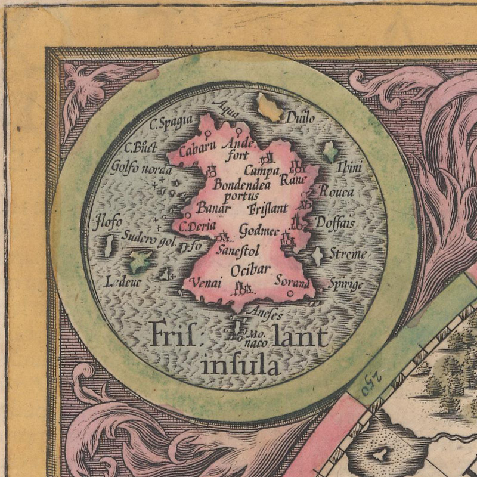
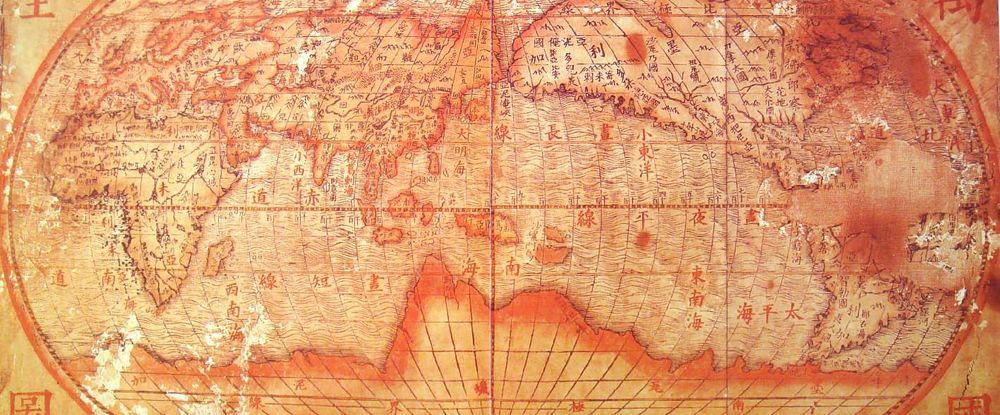
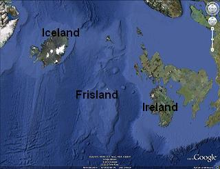
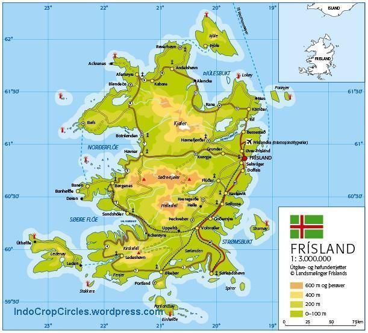
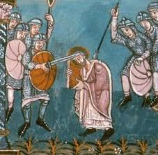

Frisland

Introduction
Frisland, also known as Frischlant, Friesland, Frislanda, Frislandia, and Fixland, is a "phantom" island that appeared on virtually all maps of the North Atlantic between 1560s - 1660s.

There once existed an island in the North Atlantic called Frisland - at least according to several maps published from the late 16th century into the late 18th century. It first appeared on the “Zeno map” in 1558 and was soon found on maps by respected and influential cartographers like Ruscelli, Mercator, and Ortelius. A landmass larger than Ireland, located south of Iceland, Frisland would have looked to the casual early modern observer as legitimate on paper as neighboring Greenland, maybe even more so. Its coastline was well-defined, with clusters of smaller islands surrounding it and a smattering of towns identified inland. The English explorer Martin Frobisher seemed to confirm its existence on all three of his voyages. On his first outing in July 1576, Frobisher passed what he believed to be the mountainous coast of Frisland. After spotting the island again a year later, the expedition’s chronicler, George Best, compared it to Frisland as depicted on the Zeno map: “For so much of this land as we have sayled alongst, comparing their carde [the Zeno map] with the coast, we find it very agreeable.” And on the third voyage, in 1578, Frobisher actually came ashore and claimed Frisland for Queen Elizabeth, dubbing it “Anglia Occidentale.”
It lies beyond the continental shelf, so it would likely be composed largely of volcanic basalt, like Iceland. It would also have a similar history, initially being discovered by Irish or Scottish monks, and later conquered by Norse settlers. This would mean a stronger and more lasting Norse influence on Scotland and Ireland. The Highlands and islands might have a Frisian language tradition rather than a Gaelic one.
Frisland appears to be born out of confusion between an imaginary island and the actual southern part of Greenland. Even in the mid-18th century, explorers' maps clearly depicted Frisland as separated from Greenland by a wide strait. The myth of Frisland was exposed as explorers, chiefly from England and France, charted and mapped the north-west waters. However, Frederick J. Pohl identifies Frisland with an island he refers to as "Fer Island", modern English Fair Isle, an island lying between mainland Shetland and the Orkney islands.
Literary
This "fictional island", as they love to say... officially appears to have been born out of the confusion between an imaginary island and the actual southern part of Greenland, but, even in the mid 18th century, some of the explorers' maps clearly depict Frisland as an actual island.
Dello Scoprimento begins with a description of a letter from Nicolò (the Elder) to his brother Antonio. As the letter tells it, in 1380, Nicolò departed Venice for England and Flanders, only to be diverted to the north by a violent storm. He shipwrecked on an island called Frisland, where he met a prince named Zichmni. Zichmni not only spoke Latin, but he was familiar with Italy and was thrilled to be in the presence of a Venetian. The ruler took an immediate liking to Nicolò and consulted with him as he plotted to take over the nearby islands of Ledovo, Ilofe, and Sanestol. So grateful was Zichmni for Nicolò’s valor and naval expertise that he knighted the Venetian. Nicolò then invited his brother Antonio to the island. Antonio soon became captain of Zichmni’s fleet and joined the ruler for a 14-year campaign of exploration and combat
Equally puzzling is the cultural parallel with Friesland in the north of the Netherlands. The Frisian people remain a small but resilient community, speaking a language distinct from Dutch, yet strikingly close to Old English and Old Scots. This linguistic link suggests a deeper and perhaps forgotten history. Historical accounts even estimated Frisland’s population at between 500,000 and one million people—an astonishing figure for its time.
Following the destruction of Atlantis, a landmass that remained above sea level became known as Frisland. This island should not be confused with Friesland, the medieval region located near Saxony in present-day Holland and Germany. Frisland was located south of Iceland along the Mid-Atlantic Ridge. According to seismic data from the USGS, earthquakes occur frequently along this ridge, which is a central geological feature of the former Atlantean region. The Mid-Atlantic Ridge is composed of volcanic mountains, and their instability contributed to the sinking of Atlantis. As tectonic plates diverge, the crust between them is stretched and pulled downward—an exact description of what happened to Frisland.
Historical records from the Viking era provide compelling accounts of Frisland. Documentation in Scandinavian and Northern European archives mentions a king and queen of the island, and the Sagas detail frequent Viking voyages between Iceland, Frisland, and Greenland. One day, however, Frisland had vanished without a trace. An entire island—once part of Atlantean culture—disappeared almost instantaneously. Antique globes preserved in Iceland still feature Frisland clearly, reinforcing its former presence. This sudden disappearance mirrors tectonic activity that can still be observed today.

The Icelandic Cultural England website notes that for many years, Frisland appeared on maps as a “semi-fictional country.” People would describe it as an island south of Iceland, and its inhabitants would go on trips and visit other parts of the island or the mainland, and then suddenly it disappeared from maps.
In the research paper “Um Frísar, Føroyingar og Frísalandsfólkini” (On Scholars in the Faroe Islands), it is mentioned that there is a local legend that says that Frisians once inhabited the Faroe Islands, perhaps before or with the Norwegian settlers. That is, people believe that Friesland may have been historically linked to them, or that the name “Frisian” appeared in some local tradition.Also in old letters and books: Some local writers in the 18th and 19th centuries said that they found remains attributed to Frisian settlers in some areas of the Faroe Islands such as East Sunnbøur.
In 1561, just a few years after the publication of the Zeno map, Girolamo Ruscelli included Septentrionalium Partium Nova Tabula, a reduced version of the Zeno map, in his edition of Ptolemy’s Geographia. The only significant cartographic difference between the two maps is that Ruscelli keeps the connection between Greenland and Scandinavia ambiguous; otherwise, Frisland and all the other phantom islands are reproduced. In his introduction to the text, Ruscelli specifically praises Zeno the Younger’s superior knowledge of geography and history. Over the course of the next 38 years, Ruscelli included the map in every edition of his popular and influential work.
Iceland, positioned on the same Mid-Atlantic Ridge, remains vulnerable to similar geological forces. While the island is currently expanding due to volcanic activity, the risk of sudden submersion remains real. Sailors in the North Atlantic and South Pacific continue to report sightings of landmasses briefly rising above sea level and then sinking again—especially near Iceland, where volcanic forces are highly active. One such case was Christmas Island, which appeared on Christmas Day and disappeared several days later. These are not anomalies but indicators of the region’s volatile nature
The Frisland was completely erased from the maps, when modern explorers, mostly from England and France, charted and mapped the waters of the North Atlantic. They claimed that Frisland had never existed
I recently came across the work of the Italian Jesuit Giulio Aleni, who compiled this remarkable map in China in 1620. This world map, with dimensions of 220 cm by 110 cm, clearly shows Greenland, Iceland and even Friesland, while Australia is missing. Most striking is that Antarctica is already visible, although it was only officially discovered in 1820.

Geography

If you look at Google Earth today you can see by observing the ocean floor that Frisland could have potentially existed, based on the bathometry. Why has the idea of Frisland being the last remaining island of Atlantis not crossed people's minds and that it potentally could have existed? Especially since it is so near the mid atlantic ridge where there could have been major shift in the earths plates and where there is major volcanic activity.
Frisland was shown as a roughly rectangular island with three triangular promontories on its western coast. Its place-names have a very Italian look (Aqua, Spagia, Bondendea, Monaco), a fact which seems to reinforce the suspicion that its details were fabricated in southern Europe.
The natural history of Frisland is very similar to that of Iceland. It was formed by a geological hotspot beneath the Mid-Atlantic Ridge, at the boundary between the North American and Eurasian tectonic plates. Frisland has a large central plateau, with mountains and fjords along its northern coast, and low-lying plains in the east, where the majority of its population resides. It was once heavily forested, but due to deforestation, it is now primarily composed of grasslands.
Along the west coast we see two large bays named the Northern and Southern gulfs separated by a peninsula with Cape Deria and the town of Banar. It would appear that the main harbour of the Northern Gulf was the port of Bondendea whilst Sanestol served the Southern Gulf.
On the South coast there is a small peninsula at Anefes with a group of islands with the name Monaco next to it. Some maps also put the name Porlanda or Port Orlanda next to Monaco. Perhaps the one referred to the islands and the other to a town or port on or near the islands

In the south-east corner we find the town of Sorand next to a small bay to the east of the town. As we move northwards along the east coast we find another bay with the town of Godmee on its northern shore. Further on there are the towns of Doffias, Frisland and Rouea. The last feature to be highlighted is the island of Thini off the coast of the Piglu peninsula.
If you look at Google Earth today you can see by observing the ocean floor that Frisland could have potentially existed, based on the bathometry. Why has the idea of Frisland being the last remaining island of Atlantis not crossed people's minds and that it potentally could have existed? Especially since it is so near the mid atlantic ridge where there could have been major shift in the earths plates and where there is major volcanic activity.
People
The Frisii were a Germanic tribe who lived in the ancient coastal regions of Northwestern Europe, in the area now known as Friesland. They were first mentioned by the Roman historian Tacitus in his book "Germania," where he described them as one of the most powerful tribes in the region.
The Frisii are also often mentioned in connection with the mythical island of Frisland, which appeared on many maps from the 16th to the 18th century and was associated with the region of the Frisians
The Frisii were renowned for their trade and maritime skills, and they had interactions with Roman traders and officials. In the 3rd century AD, they came under pressure from other Germanic tribes like the Saxons and the Franks and were eventually incorporated into the Frankish Empire

The history and culture of the Frisii continue to have a strong influence on the region now known as Friesland. The Frisians have their own language and culture, and over the centuries, they developed a strong connection with the sea and trade. Their navigational and shipbuilding skills are still highly valued and have contributed to the development of the Dutch merchant fleet.
Language
Equally puzzling is the cultural parallel with Friesland in the north of the Netherlands. The Frisian people remain a small but resilient community, speaking a language distinct from Dutch, yet strikingly close to Old English and Old Scots. This linguistic link suggests a deeper and perhaps forgotten history. Historical accounts even estimated Frisland’s population at between 500,000 and one million people—an astonishing figure for its time.